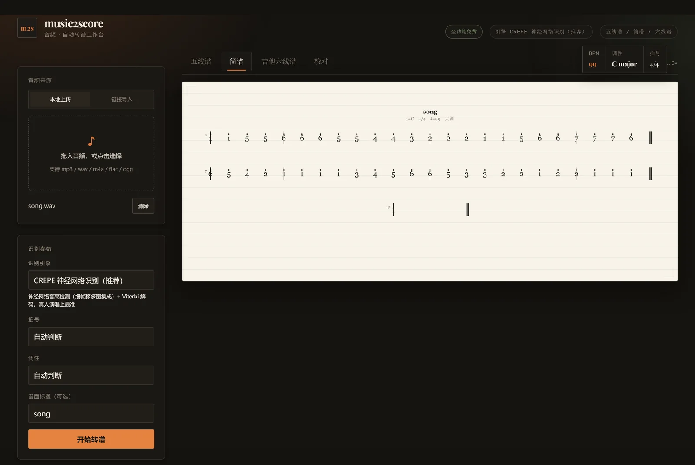
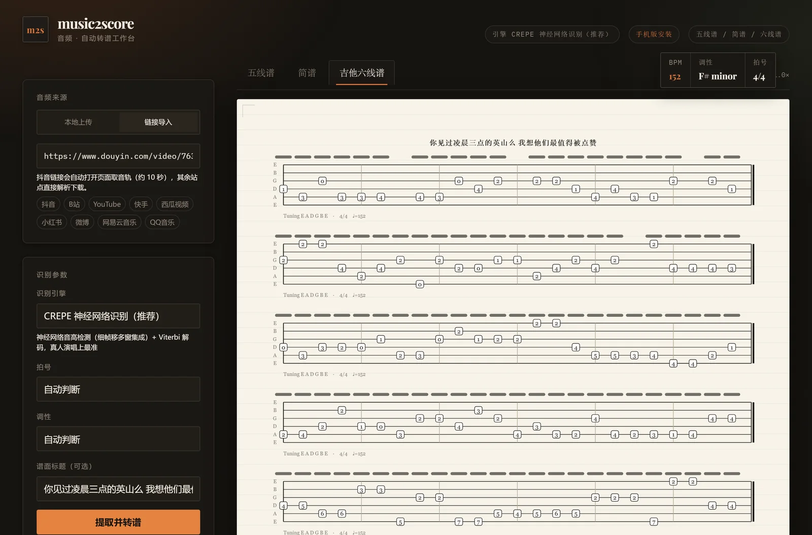
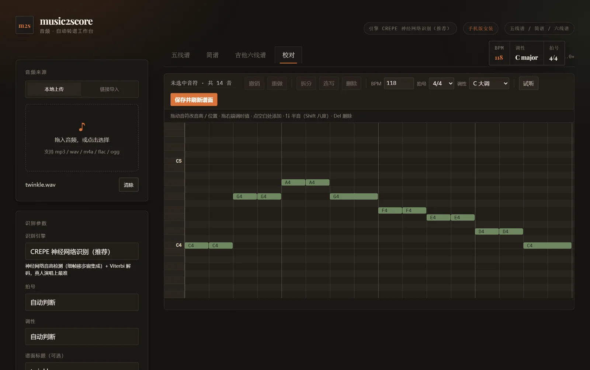
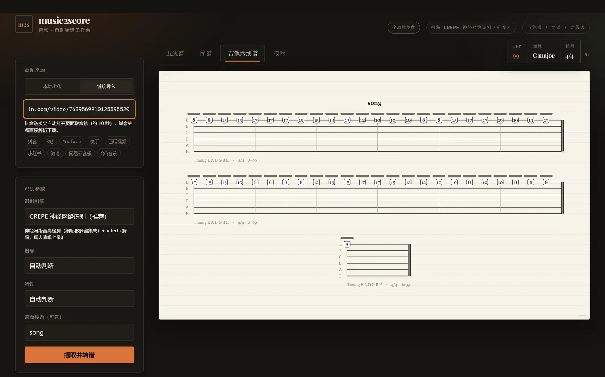
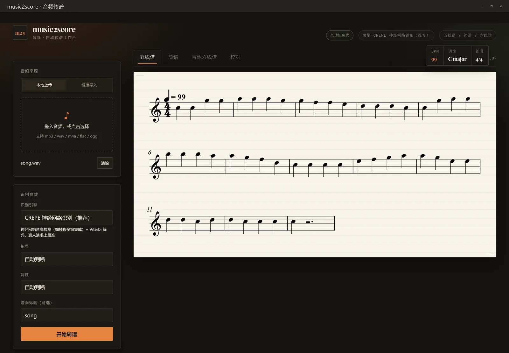

五线谱 · 简谱 · 六线谱
同一份音符，三种排版。简谱带调号与节拍线，六线谱按吉他把位自动排布，切换标签即可查看、分别导出。
为什么是它
市面上的转谱工具大多只出五线谱，而国内弹唱、教学、合唱场景真正要用的是简谱。 这里同一份识别结果，三种记法同时给你。
同一份音符，三种排版。简谱带调号与节拍线，六线谱按吉他把位自动排布，切换标签即可查看、分别导出。
识别、音源分离、谱面渲染全部在本地跑，没有账号、没有上传、没有时长订阅。未发表的作品、课堂录音、商业项目音源都能放心处理。
抖音、B 站、YouTube 等站点直接贴地址，自动抓音轨再转谱。不用先下载、不用装转换器，一条链接到成品谱。
识别是"初稿"，不是"成品"。内置编辑器可拖动音符改音高、改时值、拆分合并、增删，150 步撤销，保存即重出三种谱面。
同一首歌，三种读法
Verovio 排版的五线谱，带调号、拍号、临时记号与音符时值；支持导出 MusicXML，可直接导入 Sibelius、MuseScore、Dorico 继续排版。

简谱按首调记法生成，含调号 1=C、拍号、附点与延音线，A4 直出可打印。

六线谱按吉他把位自动排布，标出品丝数字与换把位置，弹唱伴奏可以直接照着弹。
四步
拖入文件，或粘贴视频链接。支持 wav / mp3 / m4a / flac 等，视频也能直接抽音轨。
CREPE 多窗集成识别音高，demucs 先分离人声，再经过八度纠错与 Viterbi 分段。
播放对照，听到不对的音直接拖动改。改完保存，三种谱面同步更新。
MusicXML 继续排版，MIDI 进 DAW，五线谱 / 简谱 / 六线谱 SVG 直接打印。
界面
谱面按"纸"来设计，其余全部退到暗处——你看到的第一眼就是音符，不是工具栏。



常见问题